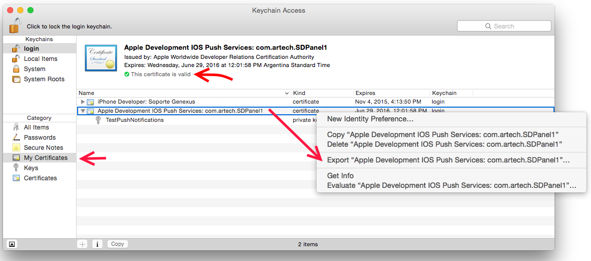
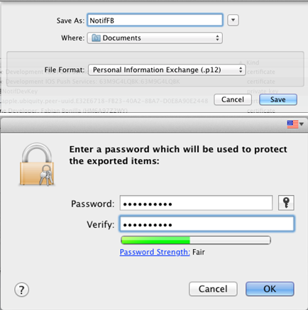
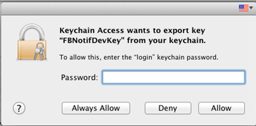
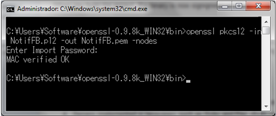

When using the Push Notifications feature in Smart Device applications, we need to have an export file of the SSL Certificate used to connect with the Apple Push Notifications Service. The steps required to make this export process in a MAC OS computer are as follows: 1. Open Keychain Access 2. Go to My Certificates list and select the Certificate created to work with the Apple Push Notifications Service. There you need to export the associated "IOS Push Services" certificate:  Then right click and select Export "Apple Development IOS Push Service:<CertificateName>". Important: It is important to select My Certificates option on the Key Chain left menu. In case you select Keys instead, the lines appears in different order, with the Apple Development IOS Push Service before the Private key. In any case, it is important to select the "certificate" line in order to export the certificate, and not the "private key" line (where the icon is a key). 3. Now we need to enter a filename and password for the certificate. Select "Personal Information Exchange (.p12)" in the File format option. 4. Before finishing, Keychain Access may ask for the logged in user's password to complete the export process. If a window similar to the one shown in the following image is displayed, we have to enter the password of the logged in user and click "Allow" or "Always Allow" (if you select this option, the window will not appear in future export processes).  5. We now have a Public Key Cryptography Standard #12 format file (p12 file extension) with the SSL Certificate that we will use in the Web application which will send the messages (Push Notifications) to the Smart Device applications. Also, remember the password created on step 3, because we will need to include it in the GeneXus objects properties in order to work with Push Notifications. RubyIn addition, if the "sender" Web application is generated with Ruby generator, we have to previously convert the p12 certificate file to a Privacy Enhanced Mail Certificate file (pem file extension) using some conversion tool. For example, using OpenSSL we need to execute the following command to make the certificate conversion: 
|